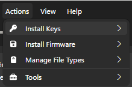
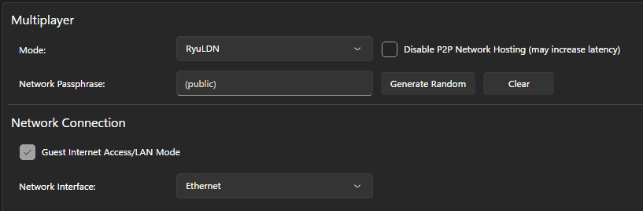
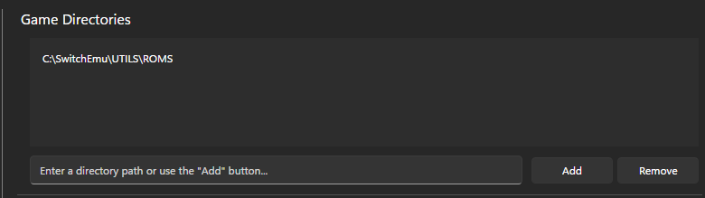
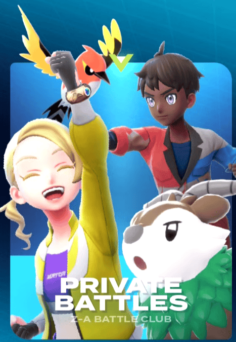
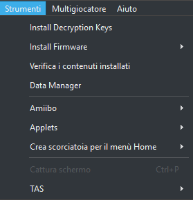
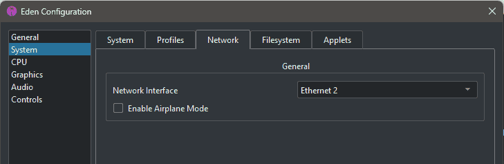
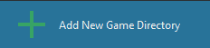

HOW TO INSTALL RYUJINX CANARY - RYUBING
Follow this steps to install and play.
Step 2: Unzip
Open the archive and place it anywhere on your computer
Step 3: Open the application and install Firmware and ProdsKey
ProdsKey 20.5.0
From ryujinx application: Action > Install Key > Install .Keys
Firmware 20.5.0
From ryujinx application: Action > Install Firmware > Install Zip or Folder

Step 4: Enable ryuLDN
From ryujinx application: Option > Setting > Network
Mode ryuLDN
Enable Guest Internet Access/LAN mode
Network Interface: (Select your network Ethernet/Wifi etc)
Press OK to save setting

Step 5: Add ROM Directory
From ryujinx application: Options > Settings > Interface
In the first box add the directory where your ROMs are located
Press OK to save setting

Now you can start the emulator
NB. ryuLDN emulate a local LAN, you cannot use internet feature like Ranked Battle or Mystery Gift
Use private battle > LOCAL for pvp

Use Link Trade to trade Pokemons
HOW TO INSTALL EDEN WITH LAN FEATURES ✨
Follow this steps to install and play.
Step 2: Unzip
Open the archive and place it anywhere on your computer
Step 3: Open the application and install Firmware and ProdsKey
ProdsKey 20.5.0
From Eden application: Tool > Install Decryption Keys
Firmware 20.5.0
From Eden application: Tool > Install Firmware > Install Zip or Folder

Step 4: check default Network Interface
From eden application: Emulation > Configure > System > Network
Be sure its selected the network interface you are using (Ethernet or Wifi or extra adapter)
Keep disabled Enable Airplane Mode
Press OK to save setting

Step 5: Add ROM Directory
From Eden application: Double click on Add New Game Directory
Select the directory where your ROMs are located
Press OK to save setting

Now you can start the emulator
NB. Eden emulate a local LAN, you cannot use internet feature like Ranked Battle or Mystery Gift
Use private battle > LOCAL for pvp
Use Link Trade to trade Pokemons
TRANSFER SAVE DATA BETWEEN EMULATORS
This section explains how to transfer save files between different emulators (Ryujinx, Eden, etc.) using the game's local save file.
1. Estrazione del Salvataggio (Emulatore di Partenza)
- In the game list, Right Click on the game title.
- Select "Open Save Data Location" (or similar).
- The save location folder will open. You should see a file named
main.
- Copy this
main file.
2. Trasferimento del Salvataggio (Emulatore di Destinazione)
Follow these steps to import the main file into the destination emulator:
- First Run Requirement (Important): If you have never run the game on this emulator, the save folder might be empty. Start a new game, save as soon as possible, and close the emulator. This creates the necessary file structure.
- In the game list, Right Click on the game title.
- Select "Open Save Data Location".
- Paste the
main file you copied. You will be prompted to overwrite the existing file (from the fresh game), Accept the overwrite.
Additional Notes
The emulator should now load the transferred save data when you start the game.